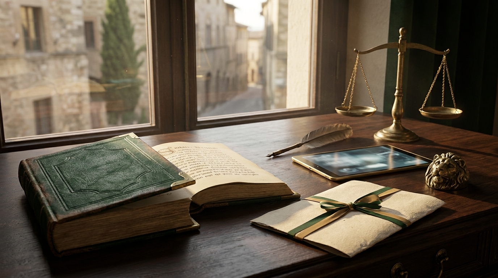

Intelligenza artificiale e licenziamenti: perché serve sempre una decisione umana
Lo schema di decreti attuativi della legge 132/2025, approvato dal Consiglio dei ministri, conferma un principio già radicato nel diritto europeo: una decisione che incide sul rapporto di lavoro non può essere affidata interamente a un algoritmo. La supervisione umana effettiva diventa il discrimine tra un licenziamento legittimo e uno viziato. Vediamo cosa cambia, sul piano normativo e probatorio, per chi gestisce il personale.

Il quadro: cosa dice la legge e cosa rimandano i decreti
La legge 132/2025 fissa i principi generali sull'uso dell'intelligenza artificiale, tra cui la centralità della supervisione umana nelle decisioni che producono effetti rilevanti sulle persone. Il dettaglio operativo — inclusi eventuali divieti specifici e l'apparato sanzionatorio — è demandato ai decreti legislativi attuativi, di cui lo schema è stato approvato dal Consiglio dei ministri.
È una distinzione che conta. Allo stato, i principi sono nella legge; le regole puntuali sul lavoro vivono negli schemi attuativi, il cui testo definitivo va atteso in pubblicazione. Per questo, sulle misure più specifiche, è corretto ragionare in termini di indirizzo già tracciato, non di norma consolidata.
L'algoritmo può supportare, non sostituire
Il punto fermo è questo: un sistema automatizzato può fornire elementi, indicatori, ranking. Non può però essere l'unico autore di un atto come il licenziamento. Serve una decisione umana reale, non una ratifica formale di un output già confezionato dalla macchina.
Questo principio non nasce oggi. L'articolo 22 del Regolamento UE 2016/679 (GDPR) riconosce all'interessato il diritto a non essere sottoposto a una decisione basata unicamente su trattamenti automatizzati che produca effetti giuridici o incida significativamente sulla sua persona. Il rapporto di lavoro rientra a pieno titolo in questa tutela.
Si aggiunge l'AI Act (Regolamento UE 2024/1689), che classifica come ad alto rischio i sistemi di IA impiegati nella gestione del personale — selezione, valutazione, decisioni su promozione e cessazione del rapporto. Per questi sistemi sono richiesti requisiti rafforzati: trasparenza, sorveglianza umana, tracciabilità.
Gli obblighi informativi già in vigore
Chi utilizza sistemi decisionali o di monitoraggio automatizzati deve già fornire informazioni specifiche ai lavoratori. L'obbligo è previsto dall'articolo 1-bis del d.lgs. 152/1997, introdotto dal Decreto Trasparenza (d.lgs. 104/2022). Si tratta di indicare logica di funzionamento, parametri e finalità dei sistemi che incidono su assunzione, gestione e cessazione del rapporto.
È un tassello che si salda con la nuova disciplina: senza informativa corretta, la legittimità della decisione automatizzata è esposta a contestazione fin dall'origine.
Le sanzioni: indirizzo sì, misura da confermare
Lo schema approvato in Consiglio dei ministri muove verso un impianto sanzionatorio dedicato all'uso illecito dell'IA. Tuttavia, base e misura delle sanzioni applicabili al rapporto di lavoro andranno confermate nel testo definitivo dei decreti. Fino ad allora, è prudente leggere il dato come direzione politica e normativa, non come quadro già esigibile.
Nel sistema di vigilanza sono coinvolte l'AgID e l'Agenzia per la cybersicurezza nazionale, con compiti che lo schema andrà a precisare.
Cambia quindi la prova in giudizio
L'aspetto pratico più pesante riguarda l'onere probatorio. In un contenzioso sul licenziamento, il datore di lavoro deve dimostrare la legittimità del recesso. Se nel processo decisionale è intervenuto un sistema automatizzato, dovrà provare due cose ulteriori:
- che la decisione finale è stata assunta da una persona, con un margine di valutazione reale;
- che il lavoratore ha ricevuto l'informativa dovuta sui sistemi impiegati.
Un output algoritmico privo di vaglio umano documentato rischia di rendere indifendibile il recesso, a prescindere dalla fondatezza dei motivi sostanziali. La documentazione del processo decisionale diventa, in concreto, parte integrante della giustificazione del licenziamento.
Cosa fare in concreto
- Mappate i sistemi. Individuate ogni strumento automatizzato che incide su selezione, valutazione, disciplina o cessazione del rapporto.
- Identificate il decisore umano. Per ogni processo, deve esistere una persona che assume la decisione finale con potere effettivo di discostarsi dall'output.
- Documentate il vaglio umano. Conservate traccia scritta delle valutazioni che giustificano l'atto, non solo del risultato algoritmico.
- Aggiornate l'informativa. Verificate che i lavoratori ricevano le informazioni richieste dall'art. 1-bis del d.lgs. 152/1997.
- Monitorate il testo definitivo. È opportuna una verifica preventiva dei processi alla luce dei decreti attuativi, una volta pubblicati.
Disclaimer
Contributo informativo a cura di Tamburro & Partners — Avv. Giuseppe Tamburro. Non costituisce parere legale.
Ogni storia di lavoro ha i suoi tempi.
Se gestisci HR e vuoi un confronto su contenzioso, ispezioni o licenziamenti, scrivi allo studio. Ti rispondiamo entro un giorno lavorativo.